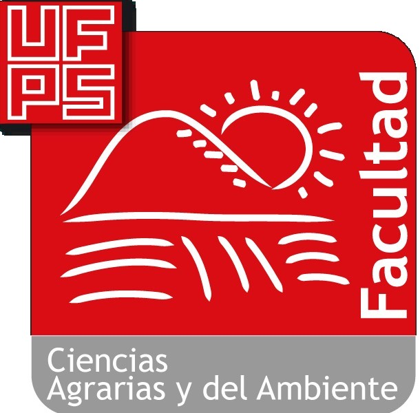
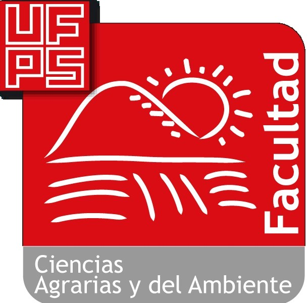

Contacto:
Decano: Néstor Andrés Urbina Suárez
Correo Institucional: facuagrarias@ufps.edu.co
Ubicación: Edificio Semipesados Tercer Piso
Teléfonos: 5751253 Conmutador 5776655- Ext. 165 – 167 - 168
Horario de atención: lunes a viernes 8:00 a.m. a 12:00 m. y 2:00 p.m. a 6:00 p.m.

Correo Institucional: facuagrarias@ufps.edu.co
Ubicación: Edificio Semipesados Tercer Piso
Teléfonos: 5751253 Conmutador 5776655- Ext. 165 – 167 - 168
Horario de atención: lunes a viernes 8:00 a.m. a 12:00 m. y 2:00 p.m. a 6:00 p.m.

Ubicacion
1.7 KM Via Principal Cucuta-Pamplona
Vereda Urengue Blonay
Corregimiento del Diamante
Vereda Urengue Blonay
Corregimiento del Diamante